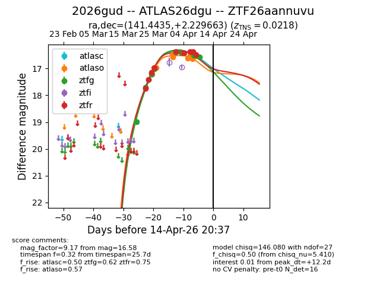
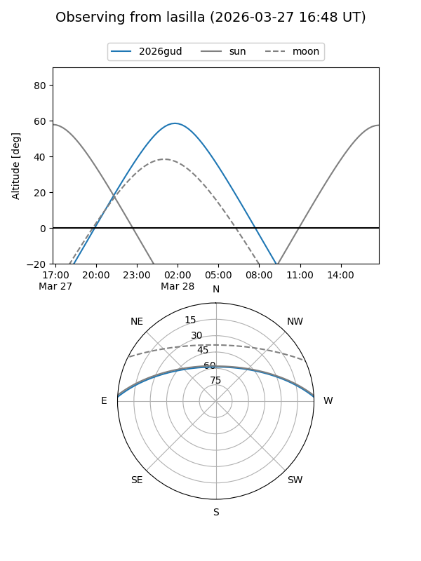
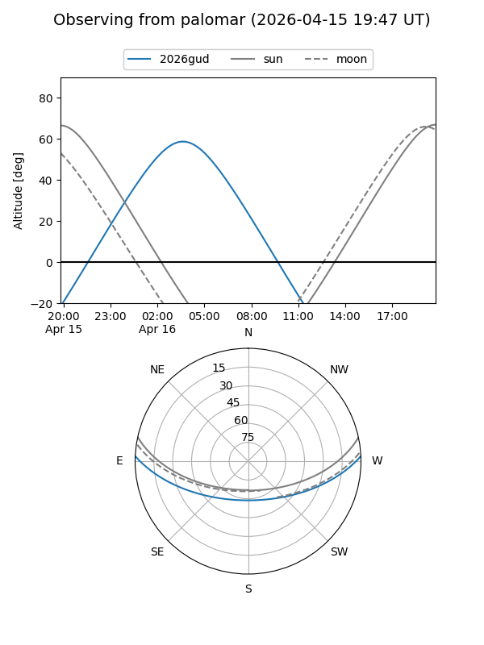
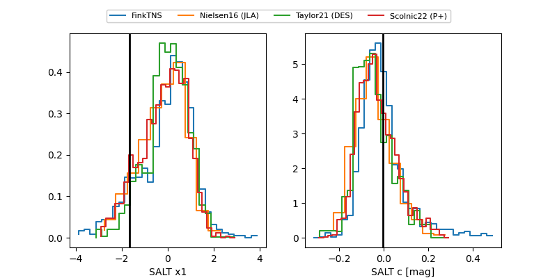

2026gud
Target 2026gud at 2026-04-14 20:47
Aliases and brokers:
FINK: link
Lasair: link
ALeRCE: link
TNS: link
YSE: link
alt names
ZTF26aannuvu (ztf,fink_ztf)
2026gud (tns,yse)
ATLAS26dgu (atlas)
Coordinates:
equatorial (ra, dec) = 141.4435,+2.22966
equatorial (HMS+DMS) = 09:25:46.43,+02:13:46.79
galactic (l, b) = (230.6490,+34.91572)
Flags:
confirmed ia
Photometry:
last atlasc=18.98, atlaso=16.64, ztfg=16.58, ztfr=16.49
1 atlasc, 8 atlaso, 9 ztfg, 9 ztfr detections
Lightcurve

Visibility


Additional plots
